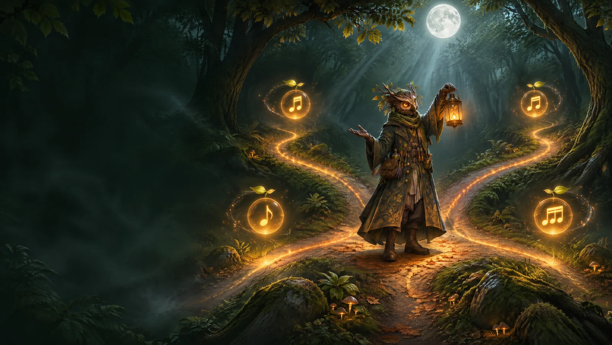

What chord comes after G?
You have a G and you don’t know where to go next. Good news: there are a handful of moves the ear loves, and a few surprises that make a song memorable.

First: what key are you in?
A chord doesn't have a "next chord" on its own. It depends on the key, the family of notes your song uses. G shows up in two very common keys:
- Key of G: G is home. The family is G, Am, Bm, C, D, Em.
- Key of C: G is the tension chord that wants to go back to C. The family is C, Dm, Em, F, G, Am.
If your song started on G and feels at rest there, you're probably in G. If G feels like it's "leaning" somewhere, you're probably in C.
If G is home (key of G)
| After G | Role | How it feels |
|---|---|---|
C | IV | Opening up, like taking a step outside. The most natural move. |
D | V | Tension and energy. It will want to come back to G. |
Em | vi | A shadow, a little emotional. It shares two notes with G, so the change is smooth. |
Am | ii | Gentle motion, often followed by D, then back to G. |
Bm | iii | Softer and more unusual. Nice before Em or C. |
Classic combinations you can try right now:
If G is the tension chord (key of C)
Here G works like a question, and the answer is C. That move, from V to I, is the strongest "coming home" in music.
Want to fake the ending? Go from G to Am instead of C. The ear expects home and gets something sadder. It's called a deceptive cadence, and it's a great way to keep a chorus going one more time.
Surprises that still sound good
These chords come from outside the family, so use them once, at a moment you want people to notice.
| After G | What it does |
|---|---|
F | A rock and roll move (♭VII). Big, open and a bit rebellious. |
Cm | The minor iv. After C it sounds bittersweet; straight after G it's dramatic. |
B7 | Pulls hard towards Em. Great before a sad or emotional part. |
E♭ | Cinematic. Sounds like the camera pulling back in a movie. |
G7 | G with an extra note that makes it lean towards C even more. Bluesy. |
A simple rule of thumb
- Want to stay calm? Go to C or Em.
- Want energy? Go to D.
- Want to surprise? Go to F, Cm or B7, then come back to the family.
The fastest way to choose is to listen. Play G, then each option, and pick the one that sounds like what's in your head.
Try it in Chordseed
Pick a mood, add your first chord and Chordseed suggests what comes next, plays it on a real instrument and shows you how to play it. Free, in your browser.
Open the app →